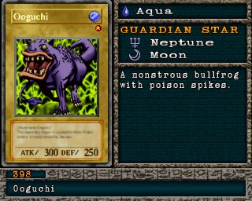

#398 · Monstro
Ooguchi
ATK300
DEF250
Nível1
TipoAqua
AtributoWater
Guardian StarsNetuno / Lua
Senha58861941
Star Chips10
Quem dropa no Mod 13
| Duelista | Rank | Chance | Média | |
|---|---|---|---|---|
| 2ndTeana 2nd | B/C/D | 8,89% 182/2048 | 1 em 11 duelos | |
| 1stTeana 1st | B/C/D | 8,69% 178/2048 | 1 em 12 duelos | |
| 1stTeana 1st | S/A-POW | 8,59% 176/2048 | 1 em 12 duelos | |
| 2ndTeana 2nd | S/A-TEC | 8,40% 172/2048 | 1 em 12 duelos | |
| 1stTeana 1st | S/A-TEC | 8,30% 170/2048 | 1 em 12 duelos | |
| 2ndTeana 2nd | S/A-POW | 4,44% 91/2048 | 1 em 23 duelos | |
| Villager 1 | B/C/D | 3,66% 75/2048 | 1 em 27 duelos | |
| Mountain Mage | B/C/D | 3,61% 74/2048 | 1 em 28 duelos | |
| Mountain Mage | S/A-POW | 3,52% 72/2048 | 1 em 28 duelos | |
| Villager 1 | S/A-TEC | 2,93% 60/2048 | 1 em 34 duelos | |
| Mountain Mage | S/A-TEC | 2,73% 56/2048 | 1 em 37 duelos | |
| B/C/D | 1,27% 26/2048 | 1 em 79 duelos | ||
| S/A-TEC | 1,12% 23/2048 | 1 em 89 duelos | ||
| B/C/D | 1,07% 22/2048 | 1 em 93 duelos | ||
| S/A-POW | 0,98% 20/2048 | 1 em 102 duelos | ||
| S/A-TEC | 0,98% 20/2048 | 1 em 102 duelos | ||
| B/C/D | 0,88% 18/2048 | 1 em 114 duelos | ||
| B/C/D | 0,88% 18/2048 | 1 em 114 duelos | ||
| S/A-TEC | 0,78% 16/2048 | 1 em 128 duelos | ||
| S/A-TEC | 0,78% 16/2048 | 1 em 128 duelos | ||
| S/A-POW | 0,73% 15/2048 | 1 em 137 duelos | ||
| S/A-POW | 0,63% 13/2048 | 1 em 158 duelos | ||
| S/A-POW | 0,63% 13/2048 | 1 em 158 duelos |
Quem dropa no jogo original
| Duelista | Rank | Chance | Média | |
|---|---|---|---|---|
| 2ndTeana 2nd | S/A-POW | 8,89% 182/2048 | 1 em 11 duelos | |
| 2ndTeana 2nd | B/C/D | 8,89% 182/2048 | 1 em 11 duelos | |
| 1stTeana 1st | B/C/D | 8,69% 178/2048 | 1 em 12 duelos | |
| 1stTeana 1st | S/A-POW | 8,59% 176/2048 | 1 em 12 duelos | |
| 2ndTeana 2nd | S/A-TEC | 8,40% 172/2048 | 1 em 12 duelos | |
| 1stTeana 1st | S/A-TEC | 8,30% 170/2048 | 1 em 12 duelos | |
| Villager 1 | B/C/D | 3,66% 75/2048 | 1 em 27 duelos | |
| Villager 1 | S/A-POW | 3,61% 74/2048 | 1 em 28 duelos | |
| Mountain Mage | B/C/D | 3,61% 74/2048 | 1 em 28 duelos | |
| Mountain Mage | S/A-POW | 3,52% 72/2048 | 1 em 28 duelos | |
| Villager 1 | S/A-TEC | 2,93% 60/2048 | 1 em 34 duelos | |
| Mountain Mage | S/A-TEC | 2,73% 56/2048 | 1 em 37 duelos | |
| B/C/D | 1,27% 26/2048 | 1 em 79 duelos | ||
| S/A-TEC | 1,12% 23/2048 | 1 em 89 duelos | ||
| B/C/D | 1,07% 22/2048 | 1 em 93 duelos | ||
| S/A-POW | 0,98% 20/2048 | 1 em 102 duelos | ||
| S/A-TEC | 0,98% 20/2048 | 1 em 102 duelos | ||
| B/C/D | 0,88% 18/2048 | 1 em 114 duelos | ||
| B/C/D | 0,88% 18/2048 | 1 em 114 duelos | ||
| S/A-TEC | 0,78% 16/2048 | 1 em 128 duelos | ||
| S/A-TEC | 0,78% 16/2048 | 1 em 128 duelos | ||
| S/A-POW | 0,73% 15/2048 | 1 em 137 duelos | ||
| S/A-POW | 0,63% 13/2048 | 1 em 158 duelos | ||
| S/A-POW | 0,63% 13/2048 | 1 em 158 duelos |
A chance vale por duelo vencido com o rank indicado. "1 em N" é a média de duelos para conseguir a carta. S/A-POW = vitória por força; S/A-TEC = vitória técnica; B/C/D = ranks baixos.